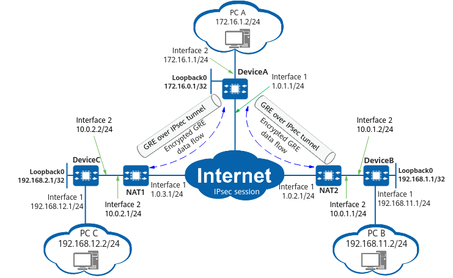

Example for Configuring GRE over IPsec for Communication Between Branches and the HQ and Configuring NAT for Communication Between Branches (Running OSPF)
Networking Requirements
In Figure 1, the HQ provides GRE over IPsec for two branches, and a NAT device is deployed at the egress of each branch. In this scenario, the aggressive mode and NAT traversal need to be configured for the HQ and branches. After a GRE tunnel is established between the HQ and each branch, OSPF needs to run on the tunnels to encrypt all the traffic between the HQ and branches.

In this example, interface 1 and interface 2 represent 10GE 0/0/1 and 10GE 0/0/2, respectively.

Configuration Roadmap
The configuration roadmap is as follows:
- Complete basic interface configurations.
- Configure static routes to ensure that there are reachable routes between the HQ and branches.
- Configure a GRE tunnel interface.
- Configure an IPsec policy and apply it to a specific interface.
- Configure OSPF.
- Configure NAT devices.
Procedure
- Complete basic interface configurations on DeviceA, DeviceB, and DeviceC.
# Complete basic interface configurations on DeviceA.
<HUAWEI> system-view [HUAWEI] sysname DeviceA [DeviceA] interface 10ge 0/0/2 [DeviceA-10GE0/0/2] ip address 172.16.1.1 255.255.255.0 [DeviceA-10GE0/0/2] quit [DeviceA] interface 10ge 0/0/1 [DeviceA-10GE0/0/1] ip address 1.0.1.1 255.255.255.0 [DeviceA-10GE0/0/1] quit [DeviceA] interface loopback 0 [DeviceA-LoopBack0] ip address 172.16.0.1 255.255.255.255 [DeviceA-LoopBack0] quit
# Complete basic interface configurations on DeviceB.
<HUAWEI> system-view [HUAWEI] sysname DeviceB [DeviceB] interface 10ge 0/0/2 [DeviceB-10GE0/0/2] ip address 10.0.1.2 255.255.255.0 [DeviceB-10GE0/0/2] quit [DeviceB] interface 10ge 0/0/1 [DeviceB-10GE0/0/1] ip address 192.168.11.1 255.255.255.0 [DeviceB-10GE0/0/1] quit [DeviceB] interface loopback 0 [DeviceB-LoopBack0] ip address 192.168.1.1 255.255.255.255 [DeviceB-LoopBack0] quit
# Complete basic interface configurations on DeviceC.
<HUAWEI> system-view [HUAWEI] sysname DeviceC [DeviceC] interface 10ge 0/0/2 [DeviceC-10GE0/0/2] ip address 10.0.2.2 255.255.255.0 [DeviceC-10GE0/0/2] quit [DeviceC] interface 10ge 0/0/1 [DeviceC-10GE0/0/1] ip address 192.168.12.1 255.255.255.0 [DeviceC-10GE0/0/1] quit [DeviceC] interface loopback 0 [DeviceC-LoopBack0] ip address 192.168.2.1 255.255.255.255 [DeviceC-LoopBack0] quit
- Configure a GRE tunnel interface on DeviceA, DeviceB, and DeviceC.
# Configure a GRE tunnel interface on DeviceA.
[DeviceA] interface tunnel 1 [DeviceA-Tunnel1] tunnel-protocol gre [DeviceA-Tunnel1] ip address 10.1.3.1 255.255.255.252 [DeviceA-Tunnel1] source 1.0.1.1 [DeviceA-Tunnel1] destination 1.0.3.1 [DeviceA-Tunnel1] quit [DeviceA] interface tunnel 0 [DeviceA-Tunnel0] tunnel-protocol gre [DeviceA-Tunnel0] ip address 10.2.3.1 255.255.255.252 [DeviceA-Tunnel0] source 1.0.1.1 [DeviceA-Tunnel0] destination 1.0.2.1 [DeviceA-Tunnel0] quit
# Configure a GRE tunnel interface on DeviceB.
[DeviceB] interface tunnel 0 [DeviceB-Tunnel0] tunnel-protocol gre [DeviceB-Tunnel0] ip address 192.168.0.2 255.255.255.252 [DeviceB-Tunnel0] source 10GE0/0/2 [DeviceB-Tunnel0] destination 1.0.1.1 [DeviceB-Tunnel0] quit
# Configure a GRE tunnel interface on DeviceC.
[DeviceC] interface tunnel 1 [DeviceC-Tunnel1] tunnel-protocol gre [DeviceC-Tunnel1] ip address 192.168.0.6 255.255.255.252 [DeviceC-Tunnel1] source 10GE0/0/2 [DeviceC-Tunnel1] destination 1.0.1.1 [DeviceC-Tunnel1] quit
- Configure static routes on DeviceA, DeviceB, and DeviceC.
# Configure static routes on DeviceA.
[DeviceA] ip route-static 0.0.0.0 0.0.0.0 1.0.1.61 [DeviceA] ip route-static 192.168.12.3 255.255.255.0 Tunnel1 [DeviceA] ip route-static 192.168.11.3 255.255.255.0 Tunnel0
# Configure static routes on DeviceB.
[DeviceB] ip route-static 0.0.0.0 0.0.0.0 10.0.1.1 [DeviceB] ip route-static 172.16.1.3 255.255.255.0 Tunnel0
# Configure static routes on DeviceC.
[DeviceC] ip route-static 0.0.0.0 0.0.0.0 10.0.2.1 [DeviceC] ip route-static 172.16.1.4 255.255.255.0 Tunnel1
- Configure an IPsec policy on DeviceA, DeviceB, and DeviceC.
# Configure an IPsec policy on DeviceA.
- Configure an IPsec proposal.
[DeviceA] ipsec proposal default [DeviceA-ipsec-proposal-default] encapsulation-mode transport [DeviceA-ipsec-proposal-default] esp authentication-algorithm sha2-256 [DeviceA-ipsec-proposal-default] esp encryption-algorithm aes-192 [DeviceA-ipsec-proposal-default] quit
- Configure an IKE proposal.
[DeviceA] ike proposal 5 [DeviceA-ike-proposal-5] encryption-algorithm aes-128 [DeviceA-ike-proposal-5] dh group14 [DeviceA-ike-proposal-5] authentication-algorithm sha2-256 [DeviceA-ike-proposal-5] authentication-method pre-share [DeviceA-ike-proposal-5] integrity-algorithm hmac-sha2-256 [DeviceA-ike-proposal-5] prf hmac-sha2-256 [DeviceA-ike-proposal-5] quit
- Configure an IKE peer.
By default, the device does not support the exchange-mode command, that is, SA negotiation through IKEv1 is not supported. To use this command, install the IKEv1 plug-in.
[DeviceA] ike peer branch1 [DeviceA-ike-peer-branch1] ike-proposal 5 [DeviceA-ike-peer-branch1] exchange-mode aggressive [DeviceA-ike-peer-branch1] pre-shared-key YsHsjx_202206 [DeviceA-ike-peer-branch1] remote-address 1.0.2.1 [DeviceA-ike-peer-branch1] nat traversal [DeviceA-ike-peer-branch1] quit [DeviceA] ike peer branch2 [DeviceA-ike-peer-branch2] ike-proposal 5 [DeviceA-ike-peer-branch2] exchange-mode aggressive [DeviceA-ike-peer-branch2] pre-shared-key YsHsjx_202206 [DeviceA-ike-peer-branch2] remote-address 1.0.3.1 [DeviceA-ike-peer-branch2] nat traversal [DeviceA-ike-peer-branch2] quit
- Create an ACL rule.
[DeviceA] acl 3003 [DeviceA-acl4-advance-3003] rule 0 permit ip source 1.0.1.1 0 destination 1.0.2.1 0 [DeviceA-acl4-advance-3003] quit [DeviceA] acl 3004 [DeviceA-acl4-advance-3004] rule 0 permit ip source 1.0.1.1 0 destination 1.0.3.1 0 [DeviceA-acl4-advance-3004] quit
- Configure an IPsec policy.
[DeviceA] ipsec policy branch 10 isakmp [DeviceA-ipsec-policy-isakmp-branch-10] security acl 3003 [DeviceA-ipsec-policy-isakmp-branch-10] ike-peer branch1 [DeviceA-ipsec-policy-isakmp-branch-10] proposal default [DeviceA-ipsec-policy-isakmp-branch-10] sa trigger-mode auto [DeviceA-ipsec-policy-isakmp-branch-10] quit [DeviceA] ipsec policy branch 20 isakmp [DeviceA-ipsec-policy-isakmp-branch-20] security acl 3004 [DeviceA-ipsec-policy-isakmp-branch-20] ike-peer branch2 [DeviceA-ipsec-policy-isakmp-branch-20] proposal default [DeviceA-ipsec-policy-isakmp-branch-20] sa trigger-mode auto [DeviceA-ipsec-policy-isakmp-branch-20] quit
By default, the negotiation for IPsec tunnel establishment is triggered by traffic. To enable automatic negotiation for IPsec tunnel establishment, run the sa trigger-mode auto command.
- Apply the IPsec policy to 10GE 0/0/1.
[DeviceA] interface 10ge 0/0/1 [DeviceA-10GE0/0/1] ipsec policy branch [DeviceA-10GE0/0/1] quit
# Configure an IPsec policy on DeviceB.
- Configure an IPsec proposal.
[DeviceB] ipsec proposal default [DeviceB-ipsec-proposal-default] encapsulation-mode transport [DeviceB-ipsec-proposal-default] esp authentication-algorithm sha2-256 [DeviceB-ipsec-proposal-default] esp encryption-algorithm aes-192 [DeviceB-ipsec-proposal-default] quit
- Configure an IKE proposal.
[DeviceB] ike proposal 5 [DeviceB-ike-proposal-5] encryption-algorithm aes-128 [DeviceB-ike-proposal-5] dh group14 [DeviceB-ike-proposal-5] authentication-algorithm sha2-256 [DeviceB-ike-proposal-5] authentication-method pre-share [DeviceB-ike-proposal-5] integrity-algorithm hmac-sha2-256 [DeviceB-ike-proposal-5] prf hmac-sha2-256 [DeviceB-ike-proposal-5] quit
- Configure an IKE peer.
By default, the device does not support the exchange-mode command, that is, SA negotiation through IKEv1 is not supported. To use this command, install the IKEv1 plug-in.
[DeviceB] ike peer center [DeviceB-ike-peer-center] ike-proposal 5 [DeviceB-ike-peer-center] exchange-mode aggressive [DeviceB-ike-peer-center] pre-shared-key YsHsjx_202206 [DeviceB-ike-peer-center] remote-address 1.0.1.1 [DeviceB-ike-peer-center] nat traversal [DeviceB-ike-peer-center] quit
- Create an ACL rule.
[DeviceB] acl 3003 [DeviceB-acl4-advance-3003] rule 0 permit ip source 1.0.2.1 0 destination 1.0.1.1 0 [DeviceB-acl4-advance-3003] quit
- Configure an IPsec policy.
[DeviceB] ipsec policy center 1 isakmp [DeviceB-ipsec-policy-isakmp-center-1] security acl 3003 [DeviceB-ipsec-policy-isakmp-center-1] ike-peer center [DeviceB-ipsec-policy-isakmp-center-1] proposal default [DeviceB-ipsec-policy-isakmp-center-1] sa trigger-mode auto [DeviceB-ipsec-policy-isakmp-center-1] quit
By default, the negotiation for IPsec tunnel establishment is triggered by traffic. To enable automatic negotiation for IPsec tunnel establishment, run the sa trigger-mode auto command.
- Apply the IPsec policy to 10GE 0/0/2.
[DeviceB] interface 10ge 0/0/2 [DeviceB-10GE0/0/2] ipsec policy center [DeviceB-10GE0/0/2] quit
# Configure an IPsec policy on DeviceC.
- Configure an IPsec proposal.
[DeviceC] ipsec proposal default [DeviceC-ipsec-proposal-default] encapsulation-mode transport [DeviceC-ipsec-proposal-default] esp authentication-algorithm sha2-256 [DeviceC-ipsec-proposal-default] esp encryption-algorithm aes-192 [DeviceC-ipsec-proposal-default] quit
- Configure an IKE proposal.
[DeviceC] ike proposal 5 [DeviceC-ike-proposal-5] encryption-algorithm aes-128 [DeviceC-ike-proposal-5] dh group14 [DeviceC-ike-proposal-5] authentication-algorithm sha2-256 [DeviceC-ike-proposal-5] authentication-method pre-share [DeviceC-ike-proposal-5] integrity-algorithm hmac-sha2-256 [DeviceC-ike-proposal-5] prf hmac-sha2-256 [DeviceC-ike-proposal-5] quit
- Configure an IKE peer.
By default, the device does not support the exchange-mode command, that is, SA negotiation through IKEv1 is not supported. To use this command, install the IKEv1 plug-in.
[DeviceC] ike peer center [DeviceC-ike-peer-center] ike-proposal 5 [DeviceC-ike-peer-center] exchange-mode aggressive [DeviceC-ike-peer-center] pre-shared-key YsHsjx_202206 [DeviceC-ike-peer-center] remote-address 1.0.1.1 [DeviceC-ike-peer-center] nat traversal [DeviceC-ike-peer-center] quit
- Create an ACL rule.
[DeviceC] acl 3004 [DeviceC-acl4-advance-3004] rule 0 permit ip source 1.0.3.1 0 destination 1.0.1.1 0 [DeviceC-acl4-advance-3004] quit
- Configure an IPsec policy.
[DeviceC] ipsec policy center 1 isakmp [DeviceC-ipsec-policy-isakmp-center-1] security acl 3004 [DeviceC-ipsec-policy-isakmp-center-1] ike-peer center [DeviceC-ipsec-policy-isakmp-center-1] proposal default [DeviceC-ipsec-policy-isakmp-center-1] sa trigger-mode auto [DeviceC-ipsec-policy-isakmp-center-1] quit
By default, the negotiation for IPsec tunnel establishment is triggered by traffic. To enable automatic negotiation for IPsec tunnel establishment, run the sa trigger-mode auto command.
- Apply the IPsec policy to 10GE 0/0/2.
[DeviceC] interface 10ge 0/0/2 [DeviceC-10GE0/0/1] ipsec policy center
- Configure an IPsec proposal.
- Configure OSPF on DeviceA, DeviceB, and DeviceC.
# Configure OSPF on DeviceA.
[DeviceA] router id 172.16.0.1 [DeviceA] ospf 1 [DeviceA-ospf-1] area 0.0.0.0 [DeviceA-ospf-1-area-0.0.0.0] network 192.168.0.0 0.0.0.3 [DeviceA-ospf-1-area-0.0.0.0] network 192.168.0.4 0.0.0.3 [DeviceA-ospf-1-area-0.0.0.0] network 172.16.1.0 0.0.0.255 [DeviceA-ospf-1-area-0.0.0.0] quit [DeviceA-ospf-1] quit
# Configure OSPF on DeviceB.
[DeviceB] router id 192.168.1.1 [DeviceB] ospf 1 [DeviceB-ospf-1] area 0.0.0.0 [DeviceB-ospf-1-area-0.0.0.0] network 192.168.11.0 0.0.0.255 [DeviceB-ospf-1-area-0.0.0.0] network 192.168.0.0 0.0.0.3 [DeviceB-ospf-1-area-0.0.0.0] quit [DeviceB-ospf-1] quit
# Configure OSPF on DeviceC.
[DeviceC] router id 192.168.2.1 [DeviceC] ospf 1 [DeviceC-ospf-1] area 0.0.0.0 [DeviceC-ospf-1-area-0.0.0.0] network 192.168.0.4 0.0.0.3 [DeviceC-ospf-1-area-0.0.0.0] network 192.168.12.0 0.0.0.255 [DeviceC-ospf-1-area-0.0.0.0] quit [DeviceC-ospf-1] quit
- Configure NAT devices.
# Configure NAT1.
<HUAWEI> system-view [HUAWEI] sysname NAT1 [NAT1] interface 10ge 0/0/2 [NAT1-10GE0/0/2] ip address 10.0.2.1 255.255.255.0 [NAT1-10GE0/0/2] quit [NAT1] interface 10ge 0/0/1 [NAT1-10GE0/0/1] ip address 1.0.3.1 255.255.255.0 [NAT1-10GE0/0/1] nat enable [NAT1-10GE0/0/1] quit [NAT1] ip route-static 0.0.0.0 0.0.0.0 1.0.3.2 [NAT1] nat-policy [NAT1-policy-nat] rule name policy_nat1 [NAT1-policy-nat-rule-policy_nat1] source-address 10.0.2.0 24 [NAT1-policy-nat-rule-policy_nat1] action source-nat easy-ip [NAT1-policy-nat-rule-policy_nat1] quit [NAT1-policy-nat] quit
# Configure NAT2.
<HUAWEI> system-view [HUAWEI] sysname NAT2 [NAT2] interface 10ge 0/0/2 [NAT2-10GE0/0/2] ip address 10.0.1.1 255.255.255.0 [NAT2-10GE0/0/2] quit [NAT2] interface 10ge 0/0/1 [NAT2-10GE0/0/1] ip address 1.0.2.1 255.255.255.0 [NAT2-10GE0/0/1] nat enable [NAT2-10GE0/0/1] quit [NAT2] ip route-static 0.0.0.0 0.0.0.0 1.0.2.2 [NAT2] nat-policy [NAT2-policy-nat] rule name policy_nat2 [NAT2-policy-nat-rule-policy_nat2] source-address 10.0.1.0 24 [NAT2-policy-nat-rule-policy_nat2] action source-nat easy-ip [NAT2-policy-nat-rule-policy_nat2] quit [NAT2-policy-nat] quit
Verifying the Configuration
# Run the display ike sa command on DeviceA, DeviceB, or DeviceC to view SA information.
<DeviceA>display ike sa Total number of IKE SA in all CPU : 4 Total number of phase 1 SA in all CPU : 2 Total number of phase 2 SA in all CPU : 2 Flag Description: RD--READY ST--STAYALIVE RL--REPLACED FD--FADING TO--TIMEOUT HRT--HEARTBEAT LKG--LAST KNOWN GOOD SEQ NO. BCK--BACKED UP M--ACTIVE S--STANDBY A--ALONE NEG--NEGOTIATING Slot 0, cpu 0 IKE SA information : Number of IKE SA : 4, number of IKE SA1: 2, number of IKE SA2: 2 ------------------------------------------------------------------------------------------------------------------------------------ Conn-ID Peer VPN Flag(s) Phase RemoteType RemoteID ------------------------------------------------------------------------------------------------------------------------------------ 16777286 1.0.3.1/500 RD|ST|A v2:2 IP 1.0.3.1 16777283 1.0.3.1/500 RD|ST|A v2:1 IP 1.0.3.1 16777257 1.0.2.1/500 RD|A v2:2 IP 1.0.2.1 16777256 1.0.2.1/500 RD|A v2:1 IP 1.0.2.1 ------------------------------------------------------------------------------------------------------------------------------------
# Run the display ip routing-table command on DeviceA, DeviceB, or DeviceC. The command output shows information about the routes from the tunnel interface to the peer end.
Configuration Scripts
# sysname DeviceA # router id 172.16.0.1 # acl number 3003 rule 0 permit ip source 1.0.1.1 0 destination 1.0.2.1 0 # acl number 3004 rule 0 permit ip source 1.0.1.1 0 destination 1.0.3.1 0 # interface 10GE0/0/1 ip address 1.0.1.1 255.255.255.0 ipsec policy branch # interface 10GE0/0/2 ip address 172.16.1.1 255.255.255.0 # interface LoopBack0 ip address 172.16.0.1 255.255.255.255 # interface Tunnel1 ip address 10.1.3.1 255.255.255.252 tunnel-protocol gre source 1.0.1.1 destination 1.0.3.1 # interface Tunnel0 ip address 10.2.3.1 255.255.255.252 tunnel-protocol gre source 1.0.1.1 destination 1.0.2.1 # ip route-static 0.0.0.0 0.0.0.0 1.0.1.61 ip route-static 192.168.12.3 255.255.255.0 Tunnel1 ip route-static 192.168.11.3 255.255.255.0 Tunnel0 # ike proposal 5 encryption-algorithm aes-128 dh group14 authentication-algorithm sha2-256 authentication-method pre-share integrity-algorithm hmac-sha2-256 prf hmac-sha2-256 # ipsec proposal default encapsulation-mode transport esp authentication-algorithm sha2-256 esp encryption-algorithm aes-192 # ike peer branch1 exchange-mode aggressive pre-shared-key %+%##!!!!!!!!!"!!!!%!!!!*!!!!}gli#|~DgU-dWt!q*H%"^s7D)AbZVDK9F!S!!!!!2jp5!!!!!!;!!!!DsciTN}JkD|^Pg7(<BfNNVPv@:z,w4=.eO2!!!!!%+%# ike-proposal 5 remote-address 1.0.2.1 nat traversal # ike peer branch2 exchange-mode aggressive pre-shared-key %+%##!!!!!!!!!"!!!!%!!!!*!!!!}gli#|~DgU-dWt!q*H%"^s7D)AbZVDK9F!S!!!!!2jp5!!!!!!;!!!!DsciTN}JkD|^Pg7(<BfNNVPv@:z,w4=.eO2!!!!!%+%# ike-proposal 5 remote-address 1.0.3.1 nat traversal # ipsec policy branch 10 isakmp security acl 3003 ike-peer branch1 proposal default sa trigger-mode auto # ipsec policy branch 20 isakmp security acl 3004 ike-peer branch2 proposal default sa trigger-mode auto # ospf 1 area 0.0.0.0 network 192.168.0.4 0.0.0.3 network 172.16.1.0 0.0.0.255 network 192.168.0.0 0.0.0.3 # return
# sysname DeviceB # router id 192.168.1.1 # acl number 3003 rule 0 permit ip source 1.0.2.1 0 destination 1.0.1.1 0 # interface 10GE0/0/2 ip address 10.0.1.2 255.255.255.0 ipsec policy center # interface 10GE0/0/1 ip address 192.168.11.1 255.255.255.0 # interface LoopBack0 ip address 192.168.1.1 255.255.255.255 # interface Tunnel0 ip address 192.168.0.2 255.255.255.252 tunnel-protocol gre source 10GE0/0/2 destination 1.0.1.1 # ip route-static 0.0.0.0 0.0.0.0 10.0.1.1 ip route-static 172.16.1.3 255.255.255.0 Tunnel0 # ike proposal 5 encryption-algorithm aes-128 dh group14 authentication-algorithm sha2-256 authentication-method pre-share integrity-algorithm hmac-sha2-256 prf hmac-sha2-256 # ipsec proposal default encapsulation-mode transport esp authentication-algorithm sha2-256 esp encryption-algorithm aes-192 # ike peer center exchange-mode aggressive pre-shared-key %+%##!!!!!!!!!"!!!!&!!!!*!!!!bZrY"z".wA)N$CSyIj-0M}0$EY.gJ@,w]#Q!!!!!2jp5!!!!!!;!!!!_'"0~KROsMBKv[S(\]G6p!ay-WTJ|!(TV*I!!!!!%+%# ike-proposal 5 remote-address 1.0.1.1 nat traversal # ipsec policy center 1 isakmp security acl 3003 ike-peer center proposal default sa trigger-mode auto # ospf 1 area 0.0.0.0 network 192.168.11.0 0.0.0.255 network 192.168.0.0 0.0.0.3 # return
# sysname DeviceC # router id 192.168.2.1 # acl number 3004 rule 0 permit ip source 1.0.3.1 0 destination 1.0.1.1 0 # interface 10GE0/0/2 ip address 10.0.2.2 255.255.255.0 ipsec policy center # interface 10GE0/0/1 ip address 192.168.12.1 255.255.255.0 # interface LoopBack0 ip address 192.168.2.1 255.255.255.255 # interface Tunnel1 ip address 192.168.0.6 255.255.255.252 tunnel-protocol gre source 10GE0/0/2 destination 1.0.1.1 # ip route-static 0.0.0.0 0.0.0.0 10.0.2.1 ip route-static 172.16.1.4 255.255.255.0 Tunnel1 # ike proposal 5 encryption-algorithm aes-128 dh group14 authentication-algorithm sha2-256 authentication-method pre-share integrity-algorithm hmac-sha2-256 prf hmac-sha2-256 # ipsec proposal default encapsulation-mode transport esp authentication-algorithm sha2-256 esp encryption-algorithm aes-192 # ike peer center exchange-mode aggressive pre-shared-key %+%##!!!!!!!!!"!!!!&!!!!*!!!!bZrY"z".wA)N$CSyIj-0M}0$EY.gJ@,w]#Q!!!!!2jp5!!!!!!;!!!!_'"0~KROsMBKv[S(\]G6p!ay-WTJ|!(TV*I!!!!!%+%# ike-proposal 5 remote-address 1.0.1.1 nat traversal # ipsec policy center 1 isakmp security acl 3004 ike-peer center proposal default sa trigger-mode auto # ospf 1 area 0.0.0.0 network 192.168.12.0 0.0.0.255 network 192.168.0.4 0.0.0.3 # return
# NAT1
# sysname NAT1 # nat-policy rule name policy_nat1 source-address 10.0.2.0 24 action source-nat easy-ip # interface 10GE0/0/1 ip address 1.0.3.1 255.255.255.0 nat enable # interface 10GE0/0/2 ip address 10.0.2.1 255.255.255.0 # ip route-static 0.0.0.0 0.0.0.0 1.0.3.2 #
# NAT2
# sysname NAT2 # nat-policy rule name policy_nat2 source-address 10.0.1.0 24 action source-nat easy-ip # interface 10GE0/0/1 ip address 1.0.2.1 255.255.255.0 nat enable # interface 10GE0/0/2 ip address 10.0.1.1 255.255.255.0 # ip route-static 0.0.0.0 0.0.0.0 1.0.2.2 #